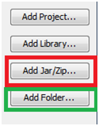

Développez des applications mobiles Java ME avec Kuix
Bienvenue dans mon premier tutoriel sur les applications mobiles. Vous souhaitez intégrer des applications pour mobiles sur votre téléphone ? En utilisant la plateforme Java ME ? Ce tutoriel est fait pour vous ! On apprendra à créer des interfaces graphiques très simples à l'aide de l'API Kuix.
Pour bien suivre ce tutoriel vous devrez avoir des compétences en :
Voici quelques applications que j'ai réalisé autre fois avec cette API : Appel d'un serveur Java EE distant avec l'API KSoap2
Appel d'un serveur .NET distant avec l'API KSoap2
Utilisation de l'API Midmaps pour les captures d'images Google map.
La qualité de votre interface graphique dépendra de vos compétences en infographie et en CSS, vous pourrez très bien refaire l'IHM de l'iPhone ou l'iPad si vous le souhaitez :D .
Le tutoriel est-il limité à Kuix ?
Kuix sera utilisé uniquement pour l'aspect graphique et quelques autres fonctionnalités, donc rien ne nous empêchera plus tard d'utiliser des spécifications de Java ME dans nos applications telles que : La JSR 172 (WebService), JSR 82 (Bluetooth), JSR 135 (Mobile Media ou MMAPI), etc.
Nous allons dans ce chapitre découvrir le projet Kuix, ses points forts, son approche, références, et terminer avec les outils nécessaires pour le développement mobile avec cette API.
Kuix (pour Kalmeo User Interface eXtenstions for J2ME) est un framework Open Source distribué sous License GPL (General Public License) qui est un projet de l'entreprise Kalmeo. L'activité de cette société a débuté suite à la réussite des produits d'Ankama Games qui lui ont permis de s'ouvrir vers d'autres marchés du développement Java sur mobile. L'API Kuix qu'elle propose nous permet de réaliser des interfaces graphiques de très haut niveau et possède de nombreuses classes graphiques (boutons, formulaires, cases à cocher, menus, listes, etc.).
Il est compatible avec une large gamme de téléphones mobiles et conforme à CLDC 1.0 et MIDP 2.0.
Il utilise le concept de Widget et d’héritage pour faciliter la personnalisation de ses interfaces graphiques.
L'interface graphique suit une approche XML et CSS !
Conception d’applications légères.
Références
On retrouve plusieurs références de cette API, on peut voir sur ce lien : References les différentes applications réalisées avec ce framework.
Design
Caractéristiques
Les interfaces graphiques de l’utilisateur (GUI) :
Sont mises en page orientée : c'est-à-dire que les éléments graphiques s’adaptent automatiquement à la taille de votre écran.
Utilisent les Widget comme des éléments graphiques : Les Widgets sont un ensemble d’éléments graphiques pouvant être réutilisés au moyen d’héritage.
Elles peuvent être écrites en Java ou XML/CSS : Cette deuxième méthode nous permet de séparer la présentation du traitement.
Approche XML/CSS
Une interface graphique en XML/CSS est écrite en XML et personnalisée à l’aide des feuilles de style CSS. Il suffit de charger le fichier XML et CSS à partir de méthodes Java.
Approche Java
Tout ce qui est faisable en XML/CSS peut se refaire en langage Java, mais le code sera moins lisible et moins souple.
On aura besoin de trois éléments essentiels : Un IDE, un émulateur et l'API Kuix.
Wireless ToolKit
Wireless ToolKit est une application pour la configuration CLDC conçue par Sun MicroSystems. Pour télécharger l'application, rendez-vous à cette adresse.
Choisissez la plate-forme désirée, windows ou linux, et cliquez sur continuer :
On atterrit alors ici :
Téléchargez l'application et installez-la, comme toute application banale que vous avez déjà installée.
Une fois ceci terminé, lancez l'application Wireless Toolkit 2.5.2 :
Une fois l'application lancée, allez dans Open Project et choisissez la démonstration que vous souhaitez, cliquez ensuite sur Open Project :
Cliquez sur Build puis sur Run, quelque chose de ce genre devrait apparaitre dans la console, selon ce que vous avez choisi auparavant :
Project "HelloWorld" loaded
Project settings saved
Building "HelloWorld"
Build complete
Running with storage root DefaultColorPhone
Une fenêtre s'ouvre également ! o_O Les plus malins d'entre vous l'auront sans doute deviné, un téléphone mobile apparait devant vos yeux ébahis... :magicien: Avec plein de bonnes choses !
Si le téléphone s'affiche, c'est que votre emulateur fonctionne correctement.
Passons à la prochaine application. :p
L'IDE NetBeans 6.7
Pour télécharger l’application NetBeans 6.7, rendez-vous à l’adresse suivante : Lien de téléchargement.
On choisit la version 6.7.1 ou 6.7 et le type de build, et on passe à la prochaine étape :
On choisit le pack Java, et on clique sur télécharger.
Remarque : La version 6.9 beta, et la version finale de 6.8 sont également disponibles, mais nous avons préféré développer avec NetBeans 6.7 car il est, des IDE NetBeans, le plus stable. Une fois téléchargé, nous l’installons comme tout logiciel. Ceci fait, on le lance.
Intégration de l'emulateur dans NetBeans.
On peut ajouter n'importe quelle plate-forme à notre IDE NetBeans, en allant à « Tool > Java Plateforms »
On clique sur « Add-Platform » et on choisit « Java ME MIDP Platform Emulator »
NetBeans va rechercher les plateformes disponibles sur votre machine. Si on a bien installé WTK, il devrait apparaitre comme suit :
On clique sur « Next » et on laisse NetBeans installer la plate-forme, puis on redémarre notre IDE.
Création d’un nouveau projet MIDP
Pour créer un projet mobile : Il nous suffit d’aller à « File > New Project > Java ME > Mobile Application » :
On spécifie un nom et un répertoire de sauvegarde, puis on choisit : La plate-forme qu’on a installée, la configuration et le profil. Et on termine la création :
Notre projet a été créé.
L'API Kuix
Pour pouvoir télécharger l’API, on doit se rendre à la page de téléchargement du site officiel.
On choisit la dernière version, et on accepte les conditions de licences :
On dézippe le fichier et on copie/colle les deux archives (kuix.jar et kutil.jar) dans le répertoire de notre nouveau projet mobile. Chez moi c’est :
Dans NetBeans, on fait un clic droit sur le projet mobile et on va dans « Properties ». On se rend dans la branche « Build > Librairies & Ressources » afin d’intégrer nos deux archives au Classpath du projet mobile.
Parmi les quatre boutons affichés, on commence par cliquer sur « Add Jar/Zip » et on ajoute les deux archives. Ensuite on clique sur « Add Folder » afin de créer un dossier de ressources qui servira de sauvegarde des images, des fichiers XML, des feuilles de styles ainsi que les fichiers d’internationalisation et on le nomme « res » (pour ressource) :

Dans ce dossier on y crée quatre répertoires :
xml : pour les documents XML.
css : pour nos feuilles de styles CSS.
img : pour nos images.
i18n : pour nos fichiers d’internalisation .properties.
Ceci fait, Kuix est installé et prêt à l’emploi :magicien: .
Kuix étant définie, les outils étant connus, on peut débuter le développement :) .
KUIX reprend la méthode de base de Java ME pour le lancement d’une application, c'est-à-dire que l’utilisation de MIDlet est toujours d’actualité. Cependant, KUIX propose sa propre MIDlet appelée KuixMIDlet hérité de MIDlet. En effet, la classe principale doit impérativement étendre cette classe. Commencez par créer un package (« New > Java > Java Package ») que vous appellerez « com.sdz.helloworld » et y créer une simple class Java (« New > Java > Java Class ») :
import org.kalmeo.kuix.core.KuixMIDlet;
public class HelloWorld extends KuixMIDlet {}
Lorsqu’on initialise une application Kuix on doit charger nos fichiers XML et CSS. On doit respectivement utiliser les méthodes initDesktopContent() et initDesktopStyles() qui doivent être présentes dans chaque classe étendant la classe KuixMIDlet. Les méthodes loadScreen() et loadCSS() de la classe Kuix nous permettent respectivement de charger un fichier XML et CSS :
import org.kalmeo.kuix.core.KuixMIDlet;
import org.kalmeo.kuix.widget.Screen;
import org.kalmeo.kuix.core.Kuix;
import org.kalmeo.kuix.widget.Desktop;
public class HelloWorld extends KuixMIDlet{
public void initDesktopStyles() {
Kuix.loadCss("style.css");
}
public void initDesktopContent(Desktop desktop) {
Screen screen = Kuix.loadScreen("helloworld.xml", null);
screen.setCurrent();
}
}
Créez un nouveau fichier XML « helloworld.xml » dans le répertoire « xml » du dossier « res », en allant à « New > XML > XML Document ». Suivez la même procédure pour le fichier css « style.css », qu'on placera dans le répertoire « css », en allant à « New > Other > Cascading Style Sheet ».
Notre projet étant créé et notre classe mère étant disponible, on peut s'occuper de la partie XML. L'API Kuix nous offre un large panel de Widget dont on peut d'ores et déjà prendre connaissance en visitant ce lien : Widget Reference.
Notre but étant dans ce chapitre, d'afficher Hello World à l'écran, nous ne détaillerons pas ces Widget pour le moment. Tout fichier XML doit être contenu dans une racine ou root, dans notre cas, c'est les balises <screen></screen> qui doivent être contenues notre fichier XML :
<screen>
</screen>
Ces balises représentent l'écran actuel de votre téléphone. Elles peuvent avoir plusieurs attributs comme "title" qui donne un titre à notre écran :
<screen title="Hello World">
</screen>
Comme tout fichier XML, entre deux balises on peut y placer du texte :
<screen title="Hello World">
Hello World !
</screen>
Ou des balises :
<screen title="Hello World">
<text>Hello World !</text>
</screen>
Les deux exemples précédents affichent tous les deux « Hello World ! », la différence entre les deux est que le premier ne pourra pas être personnalisable avec le CSS, tendis que le second oui. Exécutez l'application en cliquant sur le bouton Run !
ca veut pas se lancer :'(
L'emulateur ne sait pas quelle MIDlet lancer. Pour le lui indiquer, on fait un clic droit sur notre projet > Properties > Application Descriptor > MIDlets > Add. Dans la fenêtre on spécifie un nom et la classe de la MIDlet :
MIDlet Name : HelloWorld.
MIDlet Class : com.sdz.helloworld.HelloWorld.
MIDlet Icon : Si vous avez une image sympa, placez là dans le dossier "img" du répertoire "res" et spécifiez son chemin.
Vous remarquerez aussi que l'icône de la classe HelloWorld a changé en se plaçant à l'état "Run". On relance l'application et le résultat est...
... Tellement simple :-° . Allez voyons comment rendre beau ce texte avec du CSS :p .
Nous avons vu ensemble comment afficher un texte à l'écran. Cependant, comme pour nos pages Web, nos données doivent être personnalisée pour avoir l'air plus belles. C'est pour cette raison que les feuilles de styles CSS existent. Kuix a créé ses propres feuilles de styles CSS à l'aide de quelques classes Java ME. Voyons à présent comment exploiter leur travail :D .
On rappelle que le document XML précédent est le suivant :
<screen title="Hello World">
<text>Hello World !</text>
</screen>
Appliquons-lui quelques modifications avec le CSS :
Comme pour les balises HTML, on peut appliquer du style directement dans notre document XML.
<screen title="Hello World">
<text style="align:center">Hello World !</text>
</screen>
Le résultat est le même sauf que notre texte est ici centré :
Voilà, c'est terminé, nous avons affiché un texte à l'écran à l'aide d'un document XML et l'avons personnalisé grâce aux feuilles de styles :D .
Avec l’utilisation de document XML et les feuilles de styles CSS, le développement mobile avec KUIX devient relativement rapide et moins difficile que cela n’était avec les paquetages prédéfinies de Java ME comme javax.microedition.lcdui où il fallait coder énormément pour aboutir à une interface bien développée.
Kuix nous propose tout un étendard de composants graphiques qui peuvent être très utiles pour le développement d'interfaces graphiques très riches. Voyons les plus utilisées.
Comme dans tout langage de balisage (HTML, XAML, MXML, etc.) on doit encapsuler nos composants dans des conteneurs afin de bien les positionner dans notre page ou notre écran. Kuix nous propose diverses façons d'aligner nos composants dans son screen. On en dénombre au total 6 layouts pour nos conteneurs :
borderLayout
gridLayout
flowLayout
inLineLayout
staticLayout
tableLayout
Nous allons voir les quatre premiers. Pour en savoir plus sur les autres types de dispositions, consultez la documentation officielle.
borderLayout
Créez un nouveau document borderLayout.xml que vous placerez dans un répertoire Layout_exemple. Ceci fait, voici un exemple tout simple :
La propriété layout:borderlayout indique le type de disposition que va prendre le conteneur, layout-data va positionner nos composants correctement dans notre écran.
gridLayout
Cette disposition est certainement celle que vous utiliserez le plus, en particulier pour vos formulaires, elle représente une matrice n X m. Voici un exemple d'utilisation :
Rien de nouveau, mise à part la propriété CSS "gap" qui nous permet de créer des séparations entre les lignes et les colonnes.
flowLayout
Cette disposition permet d'aligner nos composants sur une seule ligne, si la ligne est dépassée on passe à la prochaine. Voici un simple exemple d'utilisation :
Ces quatre types de dispositions seront certainement ceux que vous utiliserez le plus souvent dans vos applications avec Kuix. Voyons maintenant ce qu'on devrait mettre d'utile dans ces conteneurs ;) .
Les boutons sont des éléments importants dans une application mobile. On les utilise régulièrement pour faire des menus, des formulaires, etc.
Les boutons
Commencez par créer un nouveau document XML que vous appellerez button.xml que vous placerez dans un répertoire du nom de "component_exemple". Nous allons commencer par créer un simple bouton à l'aide des balises <button> :
<screen title="Exemple de boutons">
<button class="monBouton">Je suis un bouton</button>
</screen>
Si vous exécutez l'application, vous remarquerez que le bouton prend tout l'écran. Pour éviter cela on utilise un conteneur. Les balises <container> sont utilisés à cet effet :
<container>
<button class="monBouton">Je suis un bouton</button>
</container>
.monBouton{
bg-color: #dddddd;
}
Bizarre comme bouton o_O , donnons-lui un peu plus de style en lui intégrant une image comme arrière-plan :
<container class="conteneur">
<button class="monBouton">Je suis un bouton</button>
</container>
Le css est le même sauf que l'on change d'image. Résultat :
Supposons que l'on ait 36 boutons radios, ce ne serait pas un peu... long à afficher ? :euh:
Pour cela, il existe un Widget qui va encapsuler tous les boutons radios et les placer dans un autre screen, après avoir cliqué sur un menu déroulant (tout comme <select> en HTML) :
On a étudié tous les boutons essentiels de l'API (mise à part la gauge que nous verrons après) qui nous permettront de faire pas mal de choses plus tard dans le tutoriel.
Tout le monde sait ce qu'est un formulaire ? Cela représente plusieurs champs de textes et éventuellement quelques boutons. Pour créer un champ de texte en HTML on ferait cela :
<input type="text" name="texte" value="une valeur" title="Entrez un texte"/>
Sachez qu'avec Kuix c'est pareil, ou presque :
<textfield id="texte" text="ma valeur" tooltip="Entrez un texte" />
Ajoutons du CSS pour voir ce que ça donne sur notre écran :


{kind=link}
{kind=link}
{kind=link}
{kind=link}